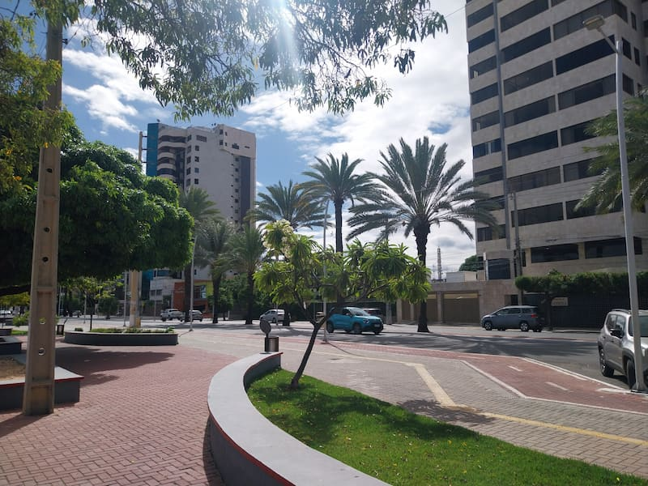

Petrolina is one of my favorite cities in Brazil. I had the privilege to serve part of my mission (almost six months) on this special place. It's quite hot for the majority of the year, and it almost never rains. It's almost like a desert. However, you'll find a tons of different kinds of fruit here. Maybe even fruits that you never had heard of.
This city is the host to one of the biggest parties of the whole Pernambuco state. It is called São João. It is a holiday in Brazil. However, this place takes it to another level. The food, the decorations, and even people, look like are having fun and just being happy. Some people may take advantage from that to do bad stuff, but members of the Church have a really healthy way of celebrating this national tradition.
